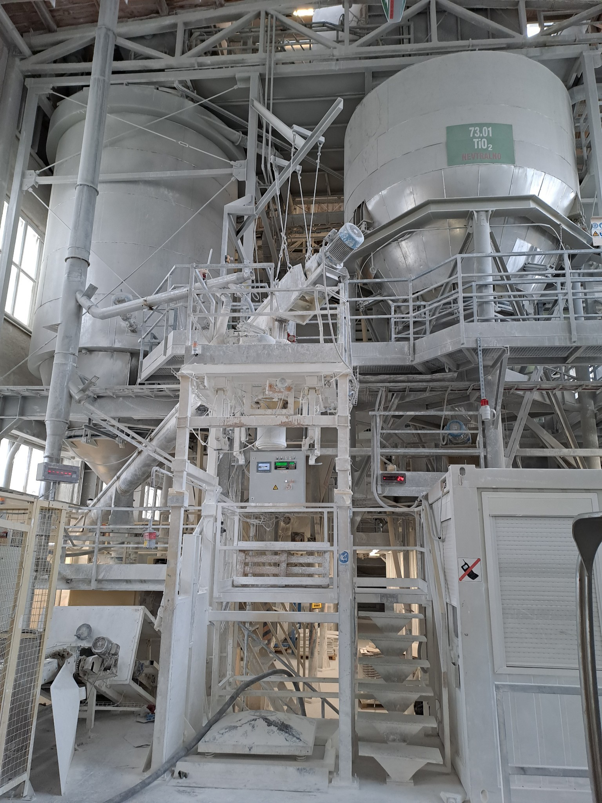
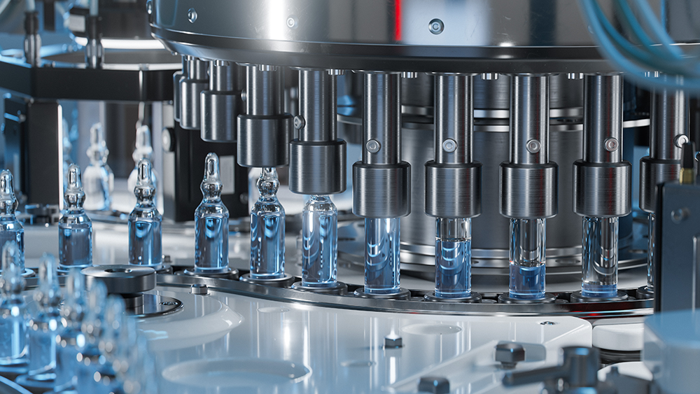

Chemical industry
ELCON delivers comprehensive automation solutions for the chemical industry, combining electrical engineering and advanced software development.

What ELCON does.
ELCON delivers comprehensive automation solutions for the chemical industry, combining electrical engineering and advanced software development. Our team of electrical designers and DCS programmers specializes in managing complex chemical processes with precision.
We ensure that production runs with minimal interruptions, even during reconstructions and maintenance shutdowns, by thoroughly testing all modifications across multiple phases.
Electrical design
- 01Designs are based on client requirements, typically derived from material lists, signal lists, and P&ID diagrams.
- 02Sample loops are created and reviewed by the client before the full electrical plan is developed.
- 03After client feedback, the final “for manufacturing” version is used to build electrical cabinets, which undergo FAT (Factory Acceptance Testing) in our workshop.
- 04On-site, cabinets are wired and retested to ensure flawless integration.
Programming
- 01Based on functional specifications provided by the client, ELCON develops custom control software.
- 02Programs are tested during FAT, often using digital twins to simulate real-world conditions.
- 03On-site, IO signal tests verify wiring accuracy, while functional tests confirm system behavior.
- 04Special attention is given to safety functions to ensure compliance and reliability.
The pain points.
- Numerous motors, valves, sensors, and control loops
- Complex batch procedures requiring strict condition checks
- High dependency on diagnostics and visualization for safe operation
- Downtime during maintenance or upgrades must be minimized
Our solution.
- Interlock blocks and Siemens SFC tools for clear visualization of process conditions
- Hardware diagnostics for faster fault resolution and reduced downtime
- Thorough multi-phase testing (FAT and SAT) to ensure reliability during reconstructions
- Digital twin simulations for validating complex logic before deployment
Cinkarna Celje, Surface Treatment 2



The core business of Cinkarna Celje, d. d. is the production and marketing of titanium dioxide, complemented by a wide range of other products such as powder coatings, masterbatches, zinc wires and alloys, agricultural products, chemical process equipment, and sulfuric acid.
The project involved the reconstruction of control and motor cabinets at the PD2 plant, which had reached the end of its service life, and for which spare parts were no longer available. Over its 30 years of operation, numerous undocumented modifications had been made, creating additional challenges for maintenance. The existing control and monitoring system, based on Siemens SIMATIC S5 controllers and Factory Link SCADA, was replaced with a modern SIEMENS PCS7 DCS system. The concept of peripheral connectivity was also redesigned using PROFINET technology.
The scope of the project included the development of new electrical plans, supply of necessary reconstruction equipment, programming of three processes across two controllers, creation of a plant simulation, FAT (Factory Acceptance Test), and commissioning. The electrical documentation was delivered in a clear and digital format, enabling fast fault diagnosis and easy modifications in case of technological changes. The control and motor cabinets were assembled and tested in the workshop. During commissioning, the old cabinets were removed and replaced with new ones.
The controllers were programmed in the PCS7 environment using the SIEMENS APL library. For monitoring and operation, an OS server and two operator clients were added, configured in the WinCC environment. To minimize plant downtime, a simulation was created in the SIMIT environment, used for detecting potential programming errors and training operators on the new SCADA system. Upon completion of commissioning, all relevant project documentation was prepared.
With the renovation of the PD2 plant, the client received a state-of-the-art DCS system. Thanks to the new equipment, the plant experiences fewer downtimes, and the system is maintainable with readily available spare parts. The use of additional frequency converters has also improved energy efficiency. The system is now ready for future production expansions.
References.
| Customer | Year | Project | Goods and services |
|---|---|---|---|
| Cinkarna Celje | 2021 | TiO2 Plant, Gel squeezing and flue gas cleaning | Software upgrade |
| Cinkarna Celje | 2020 | TiO2 Plant, Splitting and dissolution of ores and purification of splitting gases | Software upgrade |
| Cinkarna Celje | 2018-2021 | TiO2 Plant, Surface finishing 2 | Electrical detail design Software development, Control and power cabinets |
| Cinkarna Celje | 2018 | TiO2 Plant, Grinding calcinate | Software development |
| Cinkarna Celje | 2017 | TiO2 Plant, Hydrolysis | Software upgrade |
| Cinkarna Celje | 2016 | TiO2 Plant, Preparation of raw materials | Software upgrade |
| Cinkarna Celje | 2010 | TiO2 Plant, Ultrafine TiO2 | Software development |
| Christof Group / Pms | 2007, 2008 | Bio diesel plant in Valtertores, Spain | Software development |
| Christof Group / Pms | 2007, 2008 | Bio diesel plant in Gaishorn, Austria | Software development |
| Christof Group / Pms | 2007 | Bio diesel plant in Eemshaven, Netherland | Software development |
| Cinkarna Celje | 2006 | TiO2 Plant, C-Gips plant | Software development |
| JUB Slovenia | 2006 | Plant for dispersion paints, Batch for dissolvers D5 and D6 | Software development |
| JUB Slovenia | 2006 | Plant for dispersion paints -- Filling of D5 and D6 from Siloses S8 and S10 | Electrical detail design, Software development |
| JUB Slovenia | 2006 | Plant for dispersion paints -- Equalization tanks | Electrical detail design, Software development |
| Cinkarna Celje | 2005 | TiO2 Plant, Preparation of sodium titanate | Electrical design |
| JUB Slovenia | 2005 | Plant for dispersion paints, Dissolver D4 | Electrical detail design, Software development |
| Cinkarna Celje | 2004 | TiO2 Plant, Batch chemical treatment | Electrical design |
| Cinkarna Celje | 2004 | TiO2 Plant, Micronization and compressor management | Software development |
| Cinkarna Celje | 2004 | TiO2 Plant, Acid wash | Software development |
| JUB Slovenia | 2004 | Plant for dispersion paints, Line G2 | Electrical detail design, Software development |
| Cinkarna Celje | 2003 | TiO2 Plant, Drying and micronization | Electrical design |
| Cinkarna Celje | 2003 | TiO2 Plant, Alkaline washed na-titanate | Software development |
| Cinkarna Celje | 2003 | TiO2 Plant, Hydrokal solutions and preparation of 4 sulfate solutions | Software development |
| Cinkarna Celje | 2003 | TiO2 Plant, Filtration of the black solution | Electrical design |
| JUB Slovenia | 2003 | Plant for dispersion paints, Preparation of mavibond on dispersers D5 and D6 | Electrical detail design |
| JUB Slovenia | 2003 | Plant for dispersion paints, Filling silo E5 from dispersers D5 and D6 | Electrical detail design, Software development |
| JUB Slovenia | 2003 | Plant for dispersion paints, integration of filling line P14 to the production | Electrical detail design, Software development |
| Cinkarna Celje | 2002 | Neutralization plant, PCS7 | Software development |
| Cinkarna Celje | 2002 | TiO2 Plant, Gel wash | Electrical design |
| Cinkarna Celje | 2002 | TiO2 Plant, Gel pigmentation | Electrical design |
| Cinkarna Celje | 2001 | Compressor station, PCS7 | Software development |
Book a free call.
Let’s explore how ELCON can optimize your chemical production. Book a free consultation today